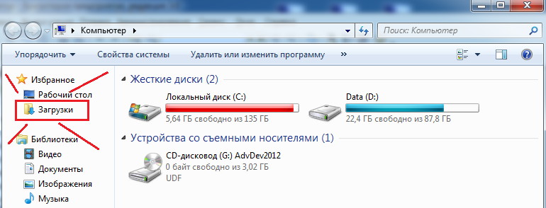
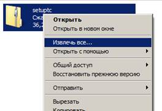
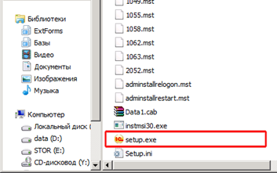
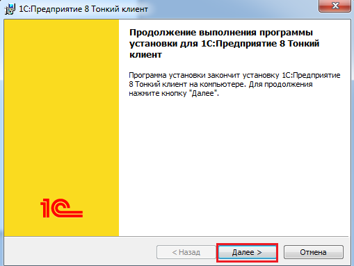
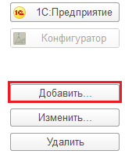
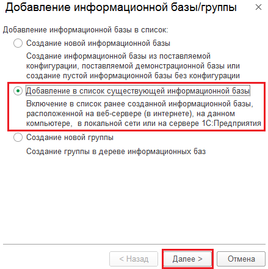
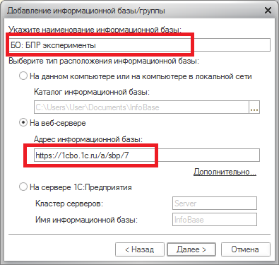
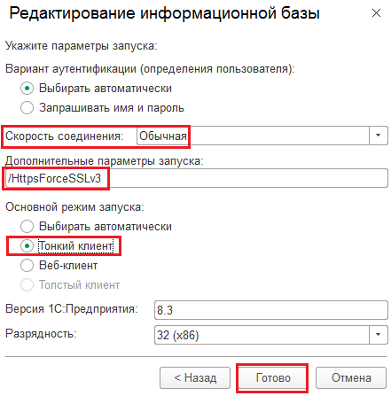

Установка тонкого клиента 1С
Скачайте дистрибутив тонкого клиента с Яндекс.Диска. В папке есть версии для Windows (архив .rar или .zip) и для macOS (файл .dmg).
Скачать с Яндекс.Диска-
Скачайте архив на компьютер
После перехода по ссылке выберите нужный файл и сохраните его. Обычно загрузки попадают в папку «Загрузки».

-
Извлеките файлы из архива
У каждого пользователя это может выглядеть по-разному — используйте встроенную распаковку Windows или программу-архиватор.

-
Запустите установку
Откройте папку, найдите файл setup.exe и запустите его двойным щелчком.

-
Следуйте шагам мастера установки
Нажимайте «Далее», пока установка не завершится. На рабочем столе появится ярлык 1С.

Подключение базы 1С
-
Если базы нет в списке — нажмите «Добавить»
Запустите 1С и нажмите кнопку «Добавить…», затем выберите добавление информационной базы на сервере.


-
Укажите адрес базы из письма
Внимание! При копировании ссылки убедитесь, что в начале и в конце нет лишних пробелов.
Выберите тип «На веб-сервере» и в поле «Адрес информационной базы» вставьте ссылку из письма, которое мы вам прислали.

-
Дополнительный параметр запуска
В поле дополнительных параметров укажите:
/HttpsForceSSLv3
